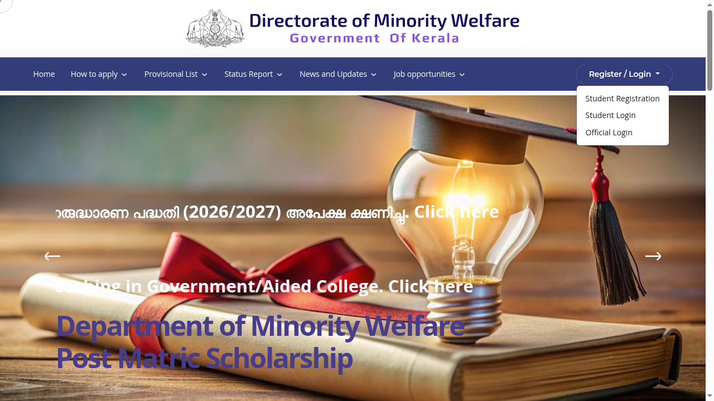
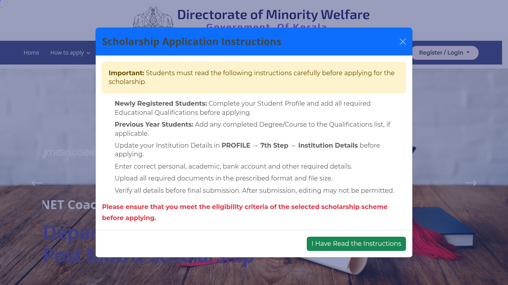

Kerala minority ITC fee reimbursement 2026-27: ₹10,000 to ₹20,000, apply by 20 November
Kerala's Minority Welfare Department is taking applications for its 2026-27 fee reimbursement scheme for minority students in government-approved private ITCs. The amount is ₹10,000 (about US$120) for a one-year course and ₹20,000 (about US$240) for a two-year course. Apply online by 20 November 2026.
Who can apply
- Students who live permanently in Kerala and study in Kerala
- From the Muslim, Christian, Sikh, Buddhist, Parsi or Jain communities
- Enrolled in a one-year or two-year course at a government-approved private ITC
- With a bank account in their own name, in any scheduled commercial bank
What you get
- ₹10,000 for a one-year course
- ₹20,000 for a two-year course
BPL applicants get priority. If there are no BPL applicants, APL applicants from the listed communities with family income up to ₹8 lakh a year are considered. 10% of the scholarships are reserved for girls. Selection is based on annual family income.
How to apply: step by step
Checked on the live Minority Welfare scholarship portal on 19 October 2026.
- Open mwdscholarship.kerala.gov.in and click Register / Login → Student Registration. Register with the student's name, Aadhaar and phone number, then log in with Student Login.
- Complete the Student Profile first - the portal's own instructions ask you to finish all 7 profile steps, add all educational qualifications, and update Institution Details (Profile → 7th step) before applying.
- Choose Apply For Scholarship and pick the ITC/ITI fee reimbursement scheme (read the notification PDF on the portal for the exact scheme name and conditions).
- Fill personal, bank account and institution details, then upload your photo, signature, SSLC certificate, income certificate and bank passbook in the prescribed format and file size.
- Verify all details before final submission - the portal warns that editing may not be permitted afterwards. Submit before 20 November 2026.
- Print the registration and hand it to your institution with the documents by 25 November 2026; the institution approves online by 28 November. Track status under Submitted Applications / Status Report.


Steps 3-6 happen inside your own login, so they are not shown as screenshots.
Video guides
We searched YouTube on 19 October 2026 for a step-by-step application video for the 2026-27 ITC fee reimbursement on this portal in English and in Malayalam. We could not verify one that matches this scheme and the current portal, so we are not linking any rather than risk outdated or unrelated instructions.
Documents to keep ready
- Registration printout, SSLC marklist copy, and proof of study at the ITC (admission card, fee receipt or ID card)
- Bank passbook first page, Aadhaar, nativity certificate, ration card
- Community or minority certificate, and an income certificate if you have one
- Marklist of the earlier exam. If it is not out yet, the notice has a consent form that you and your institution head sign
Dates in the notice
- Student applies online: 20 November 2026
- Registration printout and documents: 25 November 2026
- Institution head's checks and online approval: 28 November 2026
- Approved applications reach the directorate: 30 November 2026
The institution head must confirm 75% attendance and check every document and bank detail. The notice says a wrong bank detail can get the scholarship rejected, and the head is not responsible for that.
We read the Kerala PRD release and the department's notice (Malayalam PDF, dated 6 October 2026) on 15 October 2026, and viewed its first and last pages as images. Some text in the PDF was garbled, so we only used lines we could read clearly. The portal lists this scheme as open from 8 October 2026. We did not apply.
Sources: Department notice (PDF), Kerala PRD release (6 Oct 2026), Scheme dates on the portal. Checked 15 October 2026; apply steps and video search re-checked 19 October 2026. This is an AiCoN explainer, not a government publication.